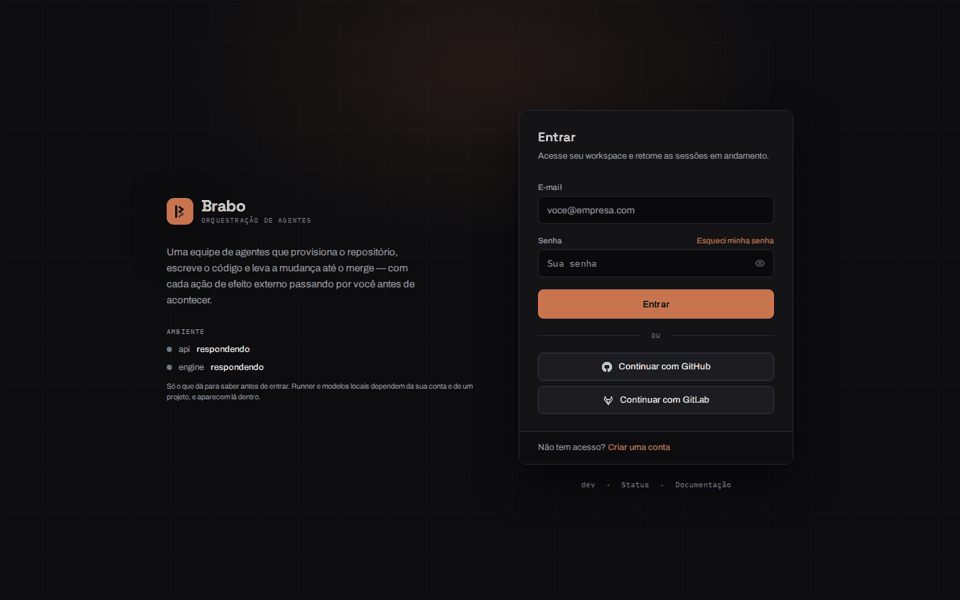

shadcn 前后的界面（2026 年 10 月 31 日）
这一轮把前端的基础换成了带 Base UI 的 shadcn/ui（ADR 0232），并在同一天让 9Router 接收智能体的工具（RN-950），这是它的视觉记录。之前是 10 月 31 日上午的 dev 安装；之后是 dev 5851354c7c，项目自有的基础组件（Button、Badge、Card、Alert、Table、Input、Select、Modal、Disclosure、标签页）已改由 shadcn 的组件提供。
录制方式：无界面的浏览器（Playwright）对本地安装操作，使用新建的测试账户，两种主题下的界面均为 1440×900。聊天使用 9Router 搭配免费模型（ollama/gpt-oss:120b），没有成本。
各界面的巡览
登录、首页、容器、Providers、账户和状态，先是深色主题，然后是浅色。迁移的目标是没有任何界面改变；两者之间变化的是数据（两次录制之间创建的测试项目）和新的开销页面。
| 之前 | 之后 |
|---|---|
 |
 |


一次 Criativo 会话
两个安装中的同一场对话：Criativo 开启会话，收到想法（"一个用来保存我奶奶食谱的应用"），随后是受众和需求。
- 之前： 9Router 没有收到工具，模型把它们写成了文本（时间线中以 YAML 书写的
declare_open_question块）。没有记录任何业务规则：侧边面板为零。 - 之后： Criativo 真正调用了工具。问题变成结构化表单，面板显示已记录的业务规则。
| 之前 | 之后 |
|---|---|
 |
 |

新的开销页面
全局页面 /spend（RN-952）在"之前"并不存在。在"之后"的录像中，它显示时没有页面边距——内容紧贴侧边栏；该缺陷已登记待修正。